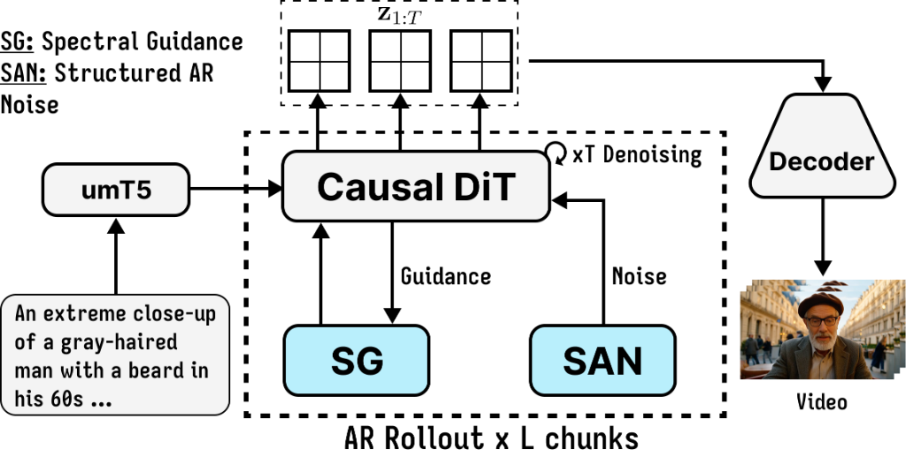
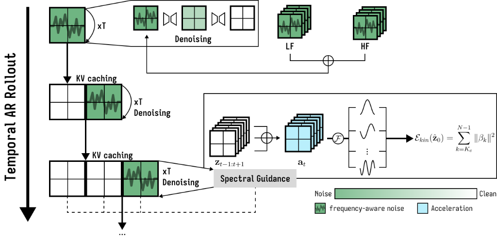
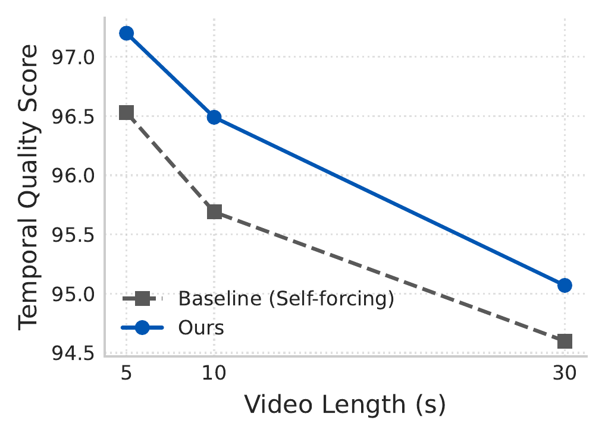
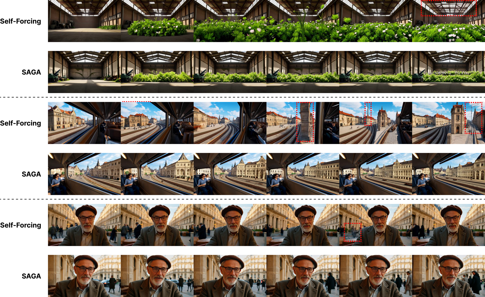

Watch the same prompt side by side to compare temporal stability.
Autoregressive video diffusion models offer compelling computational advantages for streaming and long-horizon video generation by generating latents sequentially. However, repeatedly reusing generated latents as causal context exposes a severe failure mode: small temporal perturbations accumulate across sliding windows, causing pronounced motion jitter, flickering, and semantic drift. In this work, we analyze this phenomenon from a spectral kinematic perspective and discover that discrete latent acceleration acts as a second-order temporal operator that attenuates low-frequency semantic motion while strongly magnifying high-frequency temporal perturbations.
To address this fundamental instability, we propose SAGA (Stable Acceleration Guidance for Autoregressive Video Generation), an inference-time, training-free stabilization framework. SAGA operates via two synergistic components: (1) Discrete Slepian Projections (SG) that provide maximum energy concentration in the target frequency band under finite sliding temporal support, mitigating spectral leakage while suppressing unstable kinematic noise; and (2) Structured Autoregressive Noise Initialization (SAN), which neutralizes adjacent-frame correlation while preserving higher-lag temporal structure. Evaluated across state-of-the-art autoregressive backbones (CausVid, Self-Forcing, and Causal-Forcing), SAGA delivers marked improvements in temporal consistency and human preference with negligible computational overhead.
Addressing spectral instability in autoregressive video diffusion through acceleration-domain kinematics and finite-support Slepian concentration.
Discrete latent acceleration $\mathbf{a}_t = \mathbf{z}_{t+1} - 2\mathbf{z}_t + \mathbf{z}_{t-1}$ corresponds to a high-pass frequency response $H(\omega) = 4\sin^2(\omega/2)$. While semantic motion and camera pans live in the low-frequency band ($\omega \to 0$), high-frequency temporal perturbations (jitter, flickering) are amplified up to 4× in power. Regulating acceleration directly exposes and eliminates these temporal errors without blurring spatial details.
Because autoregressive rollout operates on short temporal chunks (sliding windows), standard Discrete Fourier Transforms (DFT) suffer from severe spectral leakage. SAGA adopts Discrete Prolate Spheroidal Sequences (DPSS / Slepian basis), which provably maximize energy concentration in finite temporal intervals. By projecting latent acceleration onto band-limited Slepian vectors, SAGA isolates and penalizes high-frequency kinematic energy during reverse denoising.
SAN combines two independent, variance-preserving AR(1) streams with opposite temporal correlations. When $\theta=\pi/4$ and $\rho_{\mathrm{lf}}=-\rho_{\mathrm{hf}}=\rho$, the combined noise has zero adjacent-frame correlation, $R(1)=0$, while retaining higher-lag correlation, $R(2)=\rho^2$. Each frame remains marginally standard Gaussian.

Click to Zoom
Click to ZoomExtensive benchmarking on the VBench suite and human preference studies demonstrate consistent improvements across backbones.
| Model Backbone | Params | Subject (SC) | Background (BC) | Flickering (TF) | Smoothness (MS) | Temporal (TQ) | Aesthetic (AQ) | Image (IQ) |
|---|---|---|---|---|---|---|---|---|
| Autoregressive-Diffusion Hybrid Baselines | ||||||||
| CausVid (CVPR 2025) | 1.3B | 95.91 | 96.46 | 99.02 | 97.81 | 97.30 | 64.18 | 67.23 |
| Self-Forcing (NeurIPS 2025) | 1.3B | 95.60 | 96.20 | 99.00 | 98.38 | 97.30 | 66.33 | 69.60 |
| Causal-Forcing (ICML 2026) | 1.3B | 95.43 | 96.15 | 97.97 | 97.52 | 96.77 | 66.82 | 70.11 |
| Our Stabilized Backbones (+ SAGA) | ||||||||
| CausVid + SAGA | 1.3B | 96.71 | 96.59 | 98.96 | 98.04 | 97.58 | 64.39 | 67.46 |
| Self-Forcing + SAGA | 1.3B | 96.63 | 96.95 | 99.19 | 98.85 | 97.91 | 66.48 | 70.51 |
| Causal-Forcing + SAGA | 1.3B | 96.13 | 96.57 | 98.63 | 97.97 | 97.33 | 66.66 | 69.83 |
SAGA maintains superior stability over long-horizon rollouts up to 30 seconds, preventing error accumulation.

ZoomComprehensive evaluation outcomes including ties (video-level: 58% SAGA vs. 34% baseline).
Hover to preview or explore how SAGA generalizes across diverse styles, camera dynamics, and long-horizon narratives.
Continuous sequential frame comparisons highlighting baseline temporal drift and deformation versus SAGA's sustained structural coherence.

Click to Zoom Full ResolutionIf you find SAGA useful in your research, please cite our ACCV 2026 paper.
@inproceedings{vo2026saga,
title = {SAGA: Stable Acceleration Guidance for Autoregressive Video Generation},
author = {Vo, Thanh-Nhan and Nguyen, Trong-Thuan and Le, Trung-Hoang and Nguyen, Tam V. and Tran, Minh-Triet},
booktitle = {Asian Conference on Computer Vision (ACCV)},
year = {2026}
}